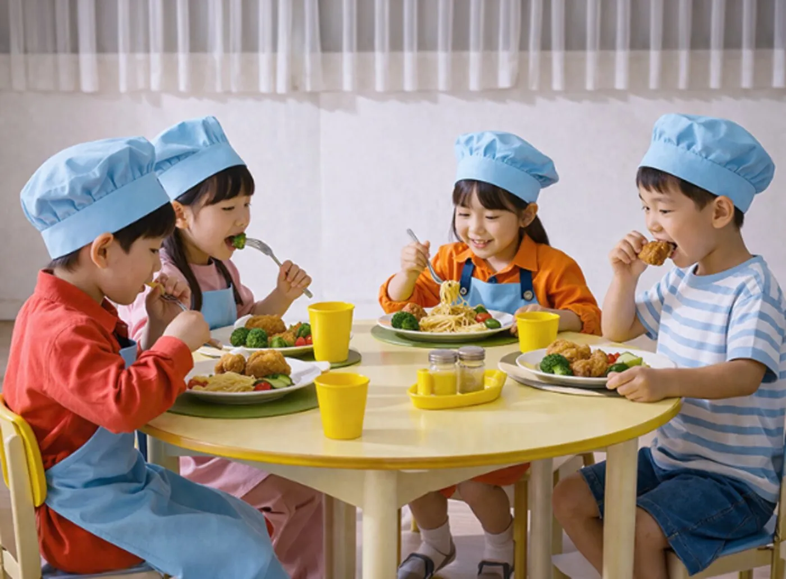

단가가 계속 오르면 예산표는 어떻게 다시 짜야 할까? 이번 달 입금은 언제 들어올까? 영수증은 월말에 언제 다 정리하지? 상담에서 자주 나오는 질문입니다.
하나하나가 거창한 문제는 아니지만, 매달 반복되면 원장님의 시간을 계속 가져갑니다. 이츠밀은 그 반복을 줄이는 데 목적을 두었습니다.
좋은 식자재를 고르는 일보다,
그 일이 매달 원장님께 부담이 되지 않게 만드는 게 먼저라고 생각했습니다.
‘밀’에서 ㅁ을 지우고, 그 자리에 쉼표를 넣었습니다. 영문 it's meal의 아포스트로피도 같은 쉼표입니다.

쉼표는 문장을 잠시 멈추는 부호입니다. 밥상 앞에서 잠시 멈추는 순간과 겹칩니다. ‘식사 그 자체(It’s Meal)’와 ‘맛있게 먹는다(Eats Meal)’ 두 뜻을 한 형태에 담았습니다.
 ㅁ 자리의 쉼표가 곧 it’s의 아포스트로피입니다
ㅁ 자리의 쉼표가 곧 it’s의 아포스트로피입니다
동원홈푸드 공식 파트너로서 전국 물류망과 영유아 전용 브랜드를 함께 씁니다.

 be chef.
be chef.
약속은 원장님들이 자주 하시는 질문에서 출발했습니다.